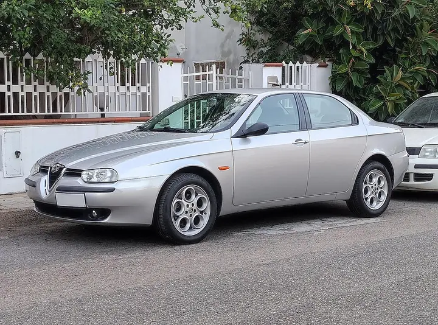

Alfa Romeo 156
1996–2007
Abstract
The Alfa Romeo 156 is a compact executive car (D), built 1996–2007 in Italy: Pomigliano d'Arco (Pomigliano d'Arco plant), Thailand: Rayong (GM Thailand). Body styles: 4-door saloon, 5-door estate, 5-door crossover. Layout: Front-engine, front-wheel-drive. Designed by Walter de Silva at Centro Stile Alfa Romeo, Giorgetto Giugiaro at Italdesign (2003 facelift).


1Specifications
| Production | 1996–2007 |
|---|---|
| Assembly | Italy: Pomigliano d'Arco (Pomigliano d'Arco plant)Thailand: Rayong (GM Thailand) |
| Designer | Walter de Silva at Centro Stile Alfa RomeoGiorgetto Giugiaro at Italdesign (2003 facelift) |
| Class | Compact executive car (D) |
| Body style | 4-door saloon5-door estate5-door crossover |
| Layout | Front-engine, front-wheel-driveFront-engine, four-wheel-drive |
| Platform | Type Two rev. 3 |
| Engine | Petrol:1.6 L Twin Spark 16V I41.8 L Twin Spark 16V I42.0 L Twin Spark 16V I42.0 L JTS 16V I42.5 L Busso 24V V63.2 L Busso 24V V6Diesel:1.9 L JTD common rail turbo 8V/16V I42.4 L JTD common rail turbo 10V/20V I5 |
| Transmission | 5-speed manual6-speed manual5-speed Selespeed automated manual6-speed Selespeed automated manual (GTA)4-speed Aisin Q-System automatic |
| Wheelbase | 2595 mm |
| Length | 4430 mm4441 mm (Sportwagon Q4)4441 mm (Crosswagon Q4) |
| Width | 1743 mm1765 mm (Crosswagon Q4) |
| Height | 1415 mm1430 mm (Sportwagon)1458 mm (Sportwagon Q4)1497 mm (Crosswagon Q4) |
| Weight | 1230–1530 kg |
| Related | Alfa Romeo 147Alfa Romeo GTFiat Bravo/BravaFiat MareaLancia LybraAlfa Romeo Dardo |
| Predecessor | Alfa Romeo 155 |
| Successor | Alfa Romeo 159 |
2Versions
- Facelifts
- 2002 facelift (first series)
- 2003 facelift (second series)
- 156 GTA
- 156 Sportwagon Q4
- 156 Crosswagon Q4
- Special versions
- Alfa Romeo 156 GTAm
- Alfa Romeo 156 Sportwagon GTA 3.5 Autodelta
- Autodelta 156 GTA 3.7 V6